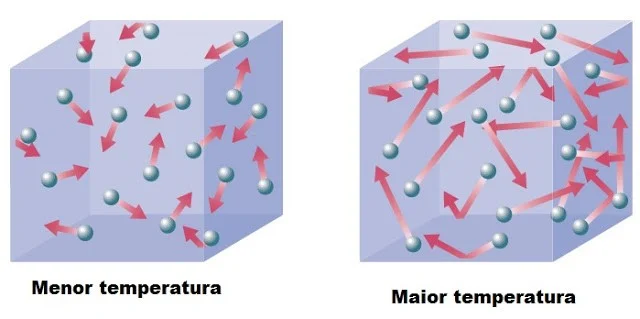
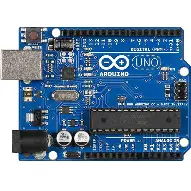
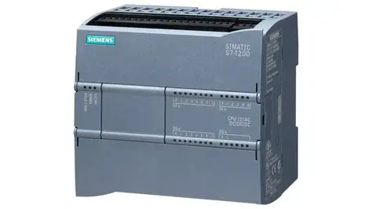
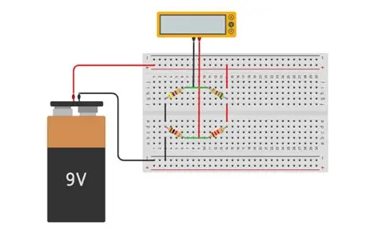
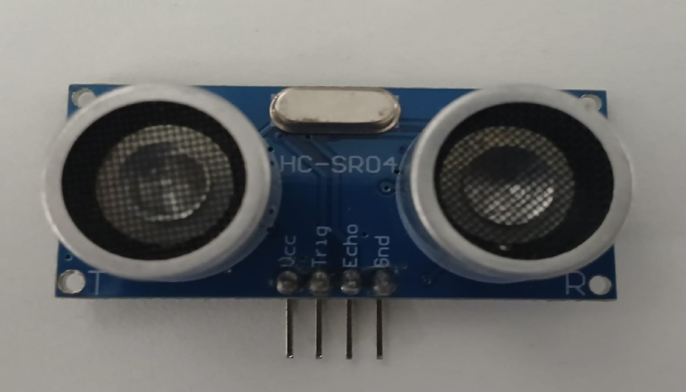
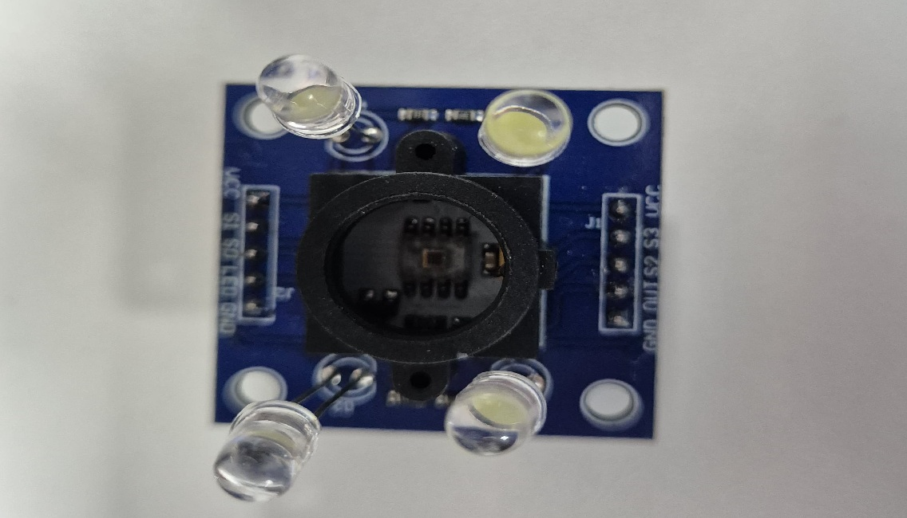
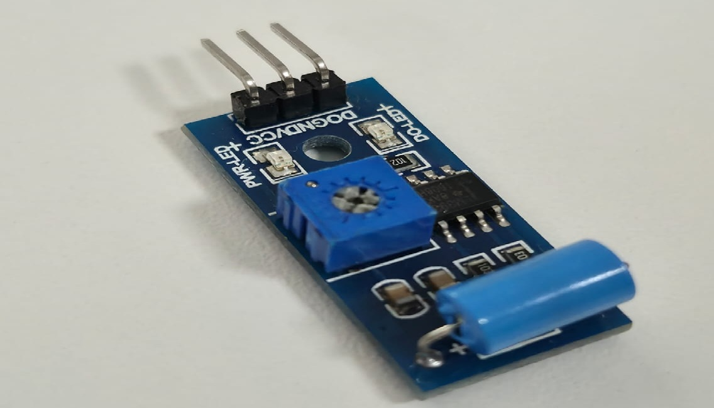
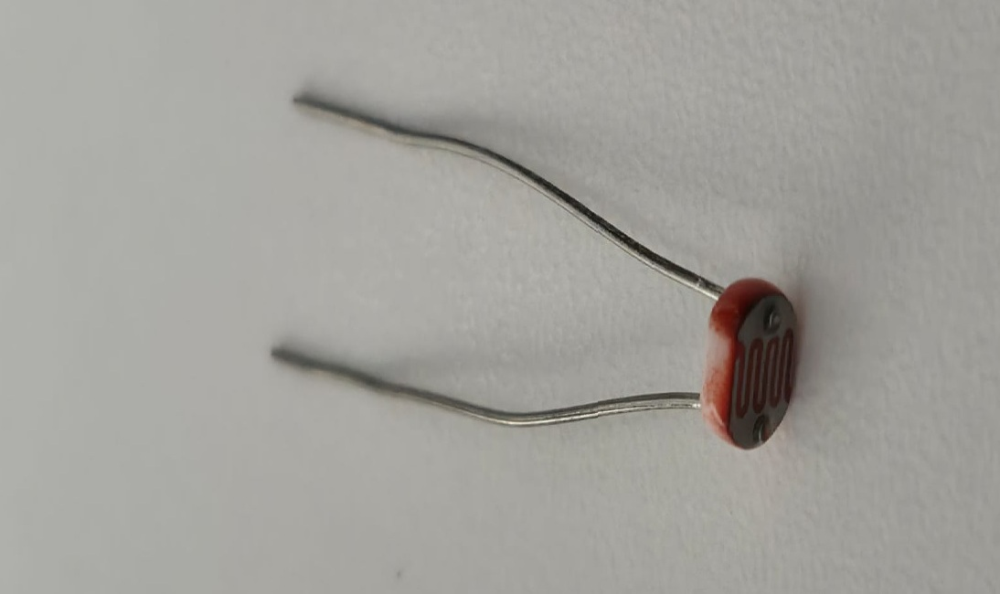
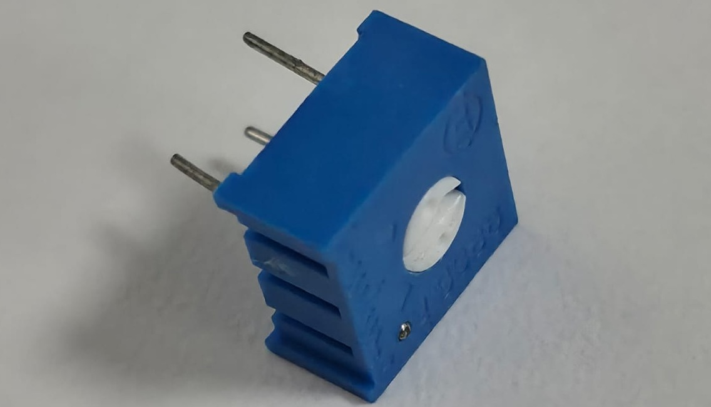
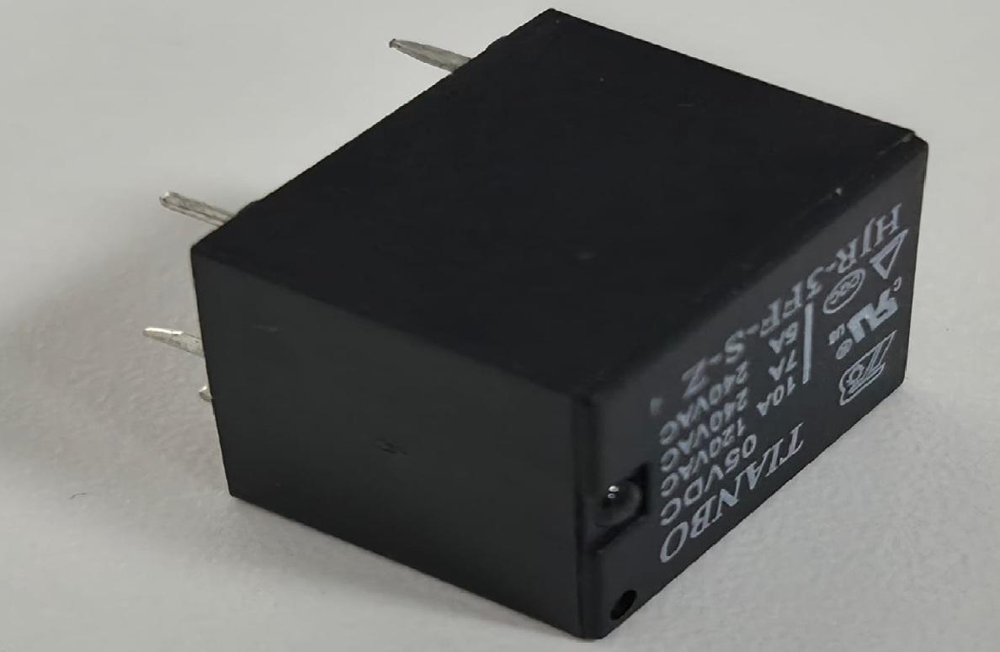

1. Fundamentos: Temperatura, Calor e Medidas
O que é Temperatura?
A temperatura é uma grandeza física macroscópica que indica o grau de agitação térmica (energia cinética média) das moléculas ou átomos que compõem um corpo ou sistema. Em termos simples, quanto maior a agitação molecular, maior será a temperatura registrada. Ela não depende do tamanho ou do número de partículas do objeto, sendo classificada como uma propriedade intensiva da matéria. As escalas mais comuns para medição são Celsius (°C), Fahrenheit (°F) e Kelvin (K).

Figura 1: Mostra como a temperatura muda de acordo com a agitação molecular.
O que é Calor?
Muitas vezes confundido com temperatura, o calor é a energia térmica em trânsito. O calor sempre flui espontaneamente de um corpo com maior temperatura para um corpo com menor temperatura, até que ambos atinjam o chamado equilíbrio térmico. Diferente da temperatura, o calor é medido em Joules (J) no Sistema Internacional de Unidades (SI) ou em calorias (cal).
Como medir a temperatura?
A medição da temperatura não é feita de forma direta, mas sim através de propriedades físicas que variam de forma previsível com a mudança térmica (propriedades termométricas). Algumas das metodologias mais comuns incluem:
- Dilatação térmica: Utilizada em termômetros de vidro com mercúrio ou álcool.
- Variação de resistência elétrica: Utilizada em sensores como PT100 (RTDs) e Termistores (NTC/PTC).
- Tensão termoelétrica: Base do funcionamento dos termopares (Efeito Seebeck).
- Radiação infravermelha: Utilizada em pirômetros e câmeras térmicas para medição sem contato.
O que é medida?
Medir é o procedimento experimental pelo qual o valor momentâneo de uma grandeza física é determinado como um múltiplo e/ou submúltiplo de uma unidade estabelecida como padrão. Em outras palavras, medir é comparar uma grandeza desconhecida com uma grandeza padrão previamente definida (como o metro, o quilograma ou o Kelvin).
O que são múltiplos e submúltiplos de unidades?
Na ciência e na engenharia, muitas vezes lidamos com valores extremamente grandes ou extremamente pequenos. Para facilitar a leitura e o cálculo, o Sistema Internacional (SI) utiliza prefixos que representam potências de 10.
| Prefixo | Símbolo | Fator de Multiplicação | Exemplo em Eletrônica |
|---|---|---|---|
| Giga | G | 10^9 (1.000.000.000) | Frequência de um processador (GHz) |
| Mega | M | 10^6 (1.000.000) | Resistores de alto valor (MΩ) |
| Kilo | k | 10^3 (1.000) | Tensão de distribuição (kV) ou resistores (kΩ) |
| Mili | m | 10^-3 (0,001) | Corrente típica em LEDs (mA) |
| Micro | µ | 10^-6 (0,000001) | Capacitores comuns (µF) |
| Nano | n | 10^-9 (0,000000001) | Capacitores cerâmicos (nF) |
O que é precisão na medida?
A precisão refere-se ao grau de variação de resultados em medições repetidas. Um instrumento é considerado preciso quando, ao medir a mesma grandeza repetidas vezes sob as mesmas condições, os resultados encontrados estão muito próximos uns dos outros (alta repetibilidade). Atenção: Um instrumento pode ser muito preciso, mas estar descalibrado (não exato).
O que é exatidão de medida?
A exatidão refere-se à proximidade do valor medido em relação ao valor "verdadeiro" ou de referência da grandeza. Um instrumento exato é aquele cujas medidas estão centradas no valor real. O cenário ideal em qualquer projeto de instrumentação é ter um sistema que seja simultaneamente preciso e exato.
2. Sensores de Temperatura
Quais os tipos de sensores de temperatura analógicos?
Os sensores analógicos convertem a temperatura em um sinal elétrico contínuo (tensão, corrente ou resistência). Os principais tipos industriais e laboratoriais são:
- Termopares: Geram uma pequena tensão (mV) baseada na diferença de temperatura entre duas junções metálicas.
- Termorresistências (RTDs): O principal representante é o PT100. Baseiam-se na variação da resistência elétrica de um metal (como platina) com a temperatura.
- Termistores (NTC e PTC): Semicondutores altamente sensíveis onde a resistência varia de forma não-linear com a temperatura.
- Sensores Integrados (CIs): Como o famoso LM35, que fornece uma saída de tensão linear de 10mV/°C.
Sensor NTC e PTC
Os termistores são componentes fabricados a partir de óxidos metálicos. Eles se dividem em dois tipos fundamentais:
NTC (Negative Temperature Coefficient): Possui coeficiente negativo de temperatura. Isso significa que, conforme a temperatura aumenta, a sua resistência elétrica diminui. São extremamente comuns em eletrodomésticos, fontes de alimentação e injeção eletrônica automotiva.
PTC (Positive Temperature Coefficient): Funciona de maneira oposta ao NTC. Conforme a temperatura aumenta, sua resistência elétrica também aumenta. São muito utilizados para proteção de circuitos eletrônicos contra sobrecorrente (funcionando como fusíveis rearmáveis).
Quais os tipos de termopares?
Devido aos diferentes metais disponíveis, existem vários tipos de termopares, padronizados por letras, para cobrir diferentes faixas térmicas e atmosferas industriais:
- Tipo K: (Cromel/Alumel) - É o mais utilizado na indústria em geral. Faixa ampla, boa resistência à oxidação.
- Tipo J: (Ferro/Constantan) - Usado em indústrias de plásticos. Sofre com oxidação em altas temperaturas (ferro).
- Tipo T: (Cobre/Constantan) - Excelente para baixas temperaturas (criogenia).
- Tipo E: (Cromel/Constantan) - Possui o maior sinal de saída (mV/°C), muito sensível.
- Tipos Nobres (S, R, B): Feitos com ligas de Platina e Ródio. Usados para temperaturas extremas, como fornos siderúrgicos e de vidro. Têm custo elevado.
Sensor Termopar Tipo K
O termopar Tipo K é composto por uma perna de Cromel (liga de níquel-cromo) e outra de Alumel (liga de níquel-alumínio). Ele é o termopar de uso geral mais popular do mundo devido ao seu baixo custo, confiabilidade e ampla faixa de medição, que vai de -200 °C até +1200 °C. O sinal gerado pelo Tipo K é em torno de 41 microvolts por grau Celsius (41 µV/°C).
Vídeo 1: Soldagem da junção de um Termopar Tipo K e Efeito Seebeck.
Como selecionar um sensor de temperatura? (Observar escala)
A seleção incorreta do sensor compromete todo o projeto. Para escolher adequadamente, os seguintes fatores devem ser considerados:
- Escala Analógica (Faixa de Temperatura): Qual é o valor mínimo e máximo a ser medido? Se for de -40°C a 100°C, um NTC, LM35 ou PT100 são excelentes. Se for 800°C num forno, você deve usar um termopar (como o Tipo K).
- Ambiente de aplicação: O sensor terá contato com substâncias corrosivas? Se sim, necessita de um poço termométrico em aço inox adequado.
- Tempo de resposta: Termopares de junção exposta respondem em frações de segundo. Sensores blindados demoram mais devido à inércia térmica do invólucro.
- Distância até o controlador: Sinais de tensão em milivolts (termopares) sofrem atenuação e ruído em longas distâncias. Sinais de corrente (4-20mA, usando transmissores) são melhores para plantas industriais longas.
3. Controladores: Arduino e CLP
O que é o Arduino?
O Arduino é uma plataforma de prototipagem eletrônica de código aberto (open-source) baseada em hardware e software flexíveis e fáceis de usar. Ele é composto basicamente por uma placa com um microcontrolador (geralmente da família AVR da Atmel, como o ATmega328P no Arduino Uno) e um ambiente de desenvolvimento integrado (IDE) baseado em C/C++. É amplamente utilizado por makers, estudantes e engenheiros para criar sistemas automatizados, projetos de robótica e aquisição de dados.

Figura 1: Mostra como a temperatura muda de acordo com a agitação molecular.
Entrada analógica e entrada digital no Arduino
Entrada Digital: Trabalha apenas com dois estados lógicos de tensão: ALTO (High / 5V) ou BAIXO (Low / 0V). É usada para ler dispositivos simples como interruptores, sensores de presença ou botões do tipo push-button.
Entrada Analógica: Permite ler valores intermediários de tensão. O Arduino possui conversores Analógico-Digitais (ADC) embutidos que transformam o valor contínuo de tensão de sensores (como LDR, NTC) em um número inteiro digital compreensível pelo processador.
Qual é a escala analógica do Arduino? (0 - 1023 => entrada / 0 - 255 => saída)
Essa é uma das características mais importantes para quem programa um Arduino:
- Entrada (ADC - Conversor Analógico para Digital): O Arduino Uno possui um ADC de 10 bits. A fórmula é 2 elevado a 10 (2¹⁰ = 1024 valores). Portanto, ele converte tensões que variam de 0V a 5V em valores inteiros que vão de 0 a 1023. Assim, uma leitura de 512 representaria cerca de 2,5V no pino analógico.
- Saída (DAC / PWM): O Arduino não possui um conversor Digital para Analógico puro (salvo placas específicas como o Due). Para "simular" saídas analógicas, ele usa PWM (Modulação por Largura de Pulso), que possui resolução de 8 bits (2⁸ = 256). Portanto, a função `analogWrite()` aceita valores na escala de 0 a 255.
O que é o CLP? (Modelo CPU 1214C DC/DC/DC)
O CLP (Controlador Lógico Programável), ou PLC em inglês, é um computador industrial robusto projetado para controlar processos de manufatura, como linhas de montagem, máquinas robóticas ou qualquer atividade que requeira controle de alta confiabilidade e facilidade de programação. Ele é construído para suportar poeira, umidade, vibrações e ruídos eletromagnéticos.
A CPU Siemens S7-1200 1214C DC/DC/DC significa:
- 1º DC: A alimentação elétrica da própria CPU do CLP é em Corrente Contínua (geralmente 24V DC).
- 2º DC: As entradas digitais operam em Corrente Contínua (24V DC).
- 3º DC: As saídas digitais são transistorizadas, chaveando Corrente Contínua (24V DC), ideais para acionamento rápido e sem desgaste mecânico, diferentemente das saídas a Relé.

Figura 2: Alvo de dardos demonstrando Precisão (dardos juntos) vs Exatidão (dardos no centro).
Entrada analógica e digital no CLP
Assim como no Arduino, as entradas digitais do CLP leem apenas estados lógicos (ligado/desligado), recebendo sinais geralmente de 24V de sensores de fim de curso, botões industriais e pressostatos.
As entradas analógicas do CLP são projetadas com altíssima precisão e geralmente trabalham com padrões da indústria. Os ADCs de CLP costumam ter de 12 a 16 bits de resolução. Os padrões elétricos lidos por essas entradas são:
- Tensão: 0 a 10V ou -10V a +10V.
- Corrente: 4 a 20mA (Mais seguro e imune a ruídos a longas distâncias industriais, pois qualquer fio partido gera 0mA, alertando falha de sensor).
O que é saída analógica (PWM) no Arduino?
A saída "analógica" do Arduino é, na verdade, um sinal de PWM (Pulse Width Modulation). O pino (marcado com um "~" na placa) emite pulsos de 5V em alta frequência, ligando e desligando muito rápido. A proporção de tempo em que o sinal fica em nível ALTO comparado ao tempo total do ciclo (Duty Cycle) determina a potência média entregue à carga. Isso permite, por exemplo, controlar o brilho de um LED de forma suave ou a velocidade de um motor DC.
O que é saída analógica no CLP?
Diferente do PWM "cru" do Arduino, as saídas analógicas de um CLP normalmente possuem verdadeiros circuitos conversores Digital-Analógicos (DAC), que entregam um sinal linear puro de corrente (ex: 4 a 20mA) ou de tensão (ex: 0 a 10V). São utilizadas para enviar sinais de referência precisos para inversores de frequência (para alterar a velocidade de motores AC de grande porte) ou para modular a abertura de válvulas de controle proporcional em tubulações.
4. Instrumentação e Medição Elétrica
O que é a Ponte de Wheatstone?
A Ponte de Wheatstone é um circuito elétrico clássico inventado para medir o valor de uma resistência elétrica desconhecida com extrema exatidão. O circuito possui quatro braços resistivos formando um losango, alimentados por uma fonte de tensão, com um galvanômetro conectado no centro.
Ela é amplamente utilizada no condicionamento de sinais de sensores cuja resistência varia muito pouco, como extensômetros (Strain Gauges) usados em balanças, e na medição industrial de temperatura através de sensores PT100. Quando a relação das resistências se equilibra, a tensão central é zero. Qualquer variação minúscula no sensor "desequilibra" a ponte, gerando uma pequena tensão que pode ser lida por um amplificador.

O que é Multímetro?
O multímetro é o instrumento de teste elétrico mais versátil e fundamental para qualquer técnico ou engenheiro. Ele combina a função de diversos medidores em um só aparelho. As funções básicas de um multímetro incluem:
- Voltímetro: Mede tensão (Diferença de potencial) em Volts. Pode ser AC ou DC.
- Amperímetro: Mede corrente elétrica em Amperes. Deve ser ligado em série com o circuito.
- Ohmímetro: Mede a resistência elétrica em Ohms. Deve ser medido com o componente desenergizado.
O que é medida de continuidade?
O teste de continuidade é uma função presente na maioria dos multímetros digitais (representado pelo símbolo de uma onda sonora ou diodo). Ele serve para verificar se há um caminho elétrico ininterrupto entre dois pontos. Se a resistência entre os dois pontos for muito baixa (geralmente abaixo de 50 ohms, indicando que o fio está inteiro), o multímetro emite um bip sonoro.
Aplicações: Encontrar cabos rompidos, checar trilhas de placas de circuito impresso com defeito ou identificar quais pinos estão fechando contato num botão ou relé.
Exemplo de medição em mili volts do Termopar Tipo K
O termopar não mede a temperatura absoluta, mas sim a diferença de temperatura entre a "junção quente" (no processo) e a "junção fria" (nos bornes do medidor). Se a junção de referência (fria) estiver a 0°C, e a ponta de medição (quente) do Tipo K for colocada em água fervente (100°C), você medirá a seguinte tensão nos fios, consultando uma tabela padrão (Tabela Seebeck):
Tensão gerada: Aproximadamente 4,096 mV.
Essa tensão é tão baixa que, para ser lida corretamente por um Arduino (que lê incrementos de 4,8mV por etapa de 0-1023 no pino analógico padrão), é obrigatório o uso de um módulo amplificador, como o circuito integrado MAX6675 ou MAX31855.
5. Dimerização com Arduino
O que é dimerização?
A dimerização é o processo de controlar, de forma variável, a potência fornecida a uma carga. Na iluminação, significa poder aumentar ou diminuir a intensidade de luz de uma lâmpada ou LED. Em microcontroladores como o Arduino, isso é feito através do sistema de PWM (Modulação por Largura de Pulso). Variando o Duty Cycle entre 0 e 255 (escala de 8 bits), controlamos a luminosidade aparente de um LED.
Exemplo: Dimerização Temporizada (a cada 100 ms)
Este programa Arduino faz o LED pulsar suavemente (efeito "fade"). A cada 100 milissegundos, ele altera o brilho, aumentando até o máximo e depois diminuindo até apagar.
// Exemplo: Dimerização Temporizada
int pinoLED = 9; // Pino PWM onde o LED está conectado
int brilho = 0; // Variável que armazena a intensidade do brilho
int incremento = 5; // Quantidade de brilho que será alterada por vez
void setup() {
pinMode(pinoLED, OUTPUT); // Configura o pino 9 como saída
}
void loop() {
// Escreve o valor do brilho no pino usando PWM (0 a 255)
analogWrite(pinoLED, brilho);
// Altera o brilho para o próximo ciclo
brilho = brilho + incremento;
// Se o brilho atingir os limites (0 ou 255), inverte o sentido
if (brilho <= 0 || brilho >= 255) {
incremento = -incremento; // Inverte o sinal (de +5 para -5 ou vice-versa)
}
// Espera 100 milissegundos antes da próxima mudança
delay(100);
}
Exemplo: Dimerização com Botão ("Push Button")
Neste exemplo, o brilho do LED só aumenta enquanto você mantém um botão pressionado. Se soltar, ele mantém o brilho. Se apertar de novo após chegar no máximo, ele zera ou inverte.
// Exemplo: Dimerização controlada por Botão
int pinoLED = 9; // Pino do LED (deve suportar PWM)
int pinoBotao = 2; // Pino de entrada digital para o Push Button
int brilho = 0; // Nível de luminosidade do LED
void setup() {
pinMode(pinoLED, OUTPUT);
// Usa o resistor de pull-up interno do Arduino (botão ligado entre pino 2 e GND)
pinMode(pinoBotao, INPUT_PULLUP);
}
void loop() {
// O sinal lido é LOW quando o botão é pressionado (por causa do pull-up)
if (digitalRead(pinoBotao) == LOW) {
brilho = brilho + 5; // Aumenta o brilho
// Se passar do limite, volta para 0
if (brilho > 255) {
brilho = 0;
delay(200); // Pausa para não recomeçar imediatamente
}
analogWrite(pinoLED, brilho); // Atualiza o LED
delay(50); // Atraso para suavizar o incremento enquanto mantém pressionado
}
}
Vídeo 2: Exemplo de dimerização Temporizada (a cada 100 ms)
6. Sensores e Atuadores Complementares
Sensor Ultrassônico

O sensor ultrassônico (como o famoso módulo HC-SR04) é utilizado para medição de distância sem contato físico. Ele funciona emitindo pulsos de som de alta frequência (acima do limiar da audição humana) através de um transmissor. O som viaja pelo ar, reflete em um obstáculo e retorna ao receptor. Sabendo a velocidade do som no ar (aproximadamente 340 m/s) e medindo o tempo gasto (Time of Flight) para o "eco" retornar, o microcontrolador calcula a distância com boa precisão.
Sensor de Cor

Modelos como o TCS3200 detectam a cor da luz que incide sobre eles. Eles possuem uma matriz de fotodiodos cobertos por filtros ópticos para o padrão RGB (Red, Green, Blue - Vermelho, Verde e Azul). Ao focar sobre um objeto com uma luz LED embutida, o sensor analisa a proporção de luz refletida para cada filtro e envia os dados ao processador, permitindo a identificação exata da tonalidade de cor do objeto.
Sensor de Vibração

Esses sensores, que variam de chaves de inclinação (tilt switches) básicas até complexos acelerômetros piezoelétricos ou MEMS, são projetados para detectar choques mecânicos, tremores ou movimentos anormais. São fundamentais na indústria para a Manutenção Preditiva, identificando motores cujos rolamentos estão desgastados e gerando vibrações excessivas antes que a máquina quebre definitivamente.
Sensor LDR (Luz)

O LDR (Light Dependent Resistor), ou Fotorresistor, é um componente cuja resistência elétrica diminui vertiginosamente quando a intensidade da luz que incide sobre ele aumenta. Na escuridão, sua resistência pode passar de milhões de ohms (MΩ), enquanto na luz solar direta cai para dezenas de ohms. É o sensor por trás do sistema clássico de acendimento automático da iluminação pública (relés fotoelétricos).
Trimpot (Potenciômetro de Ajuste)

O Trimpot (trimmer potentiometer) é um resistor variável miniaturizado projetado para ser montado diretamente na placa de circuito impresso. Diferente de sensores que reagem ao ambiente, sua resistência é alterada manualmente utilizando uma pequena chave de fenda. Ele é essencial para a calibração e ajustes finos em projetos eletrônicos, como definir o contraste de um display LCD, regular a sensibilidade de disparo de um módulo relé ou ajustar tensões de referência. Uma vez calibrado, ele geralmente é deixado na mesma posição durante toda a operação do equipamento.
Atuador Relé

Enquanto sensores coletam dados do ambiente, atuadores agem sobre ele. O Relé é uma chave eletromecânica clássica. Ele possui uma pequena bobina interna que, ao ser energizada com baixas tensões/correntes (como os 5V e 20mA saídos do Arduino), cria um campo magnético que atrai um contato mecânico. Esse contato pode fechar ou abrir circuitos de altíssima tensão e corrente, como uma bomba d'água de 220V. O relé permite total isolamento galvânico (elétrico) entre o circuito de controle de baixa potência e o circuito de potência.
Sensor NTC / PTC (Resumo Final)
Conforme explorado na Seção 2, os termistores são componentes vitais para controle térmico econômico e de médio alcance. O NTC é usado para controle de ar-condicionado e proteção de motores (monitoramento), lendo valores com precisão. O PTC age muitas vezes como um elemento de proteção passiva; ao aquecer devido a um excesso de corrente, sua resistência dispara rapidamente, impedindo a passagem de energia e salvando a placa eletrônica de curtos-circuitos.